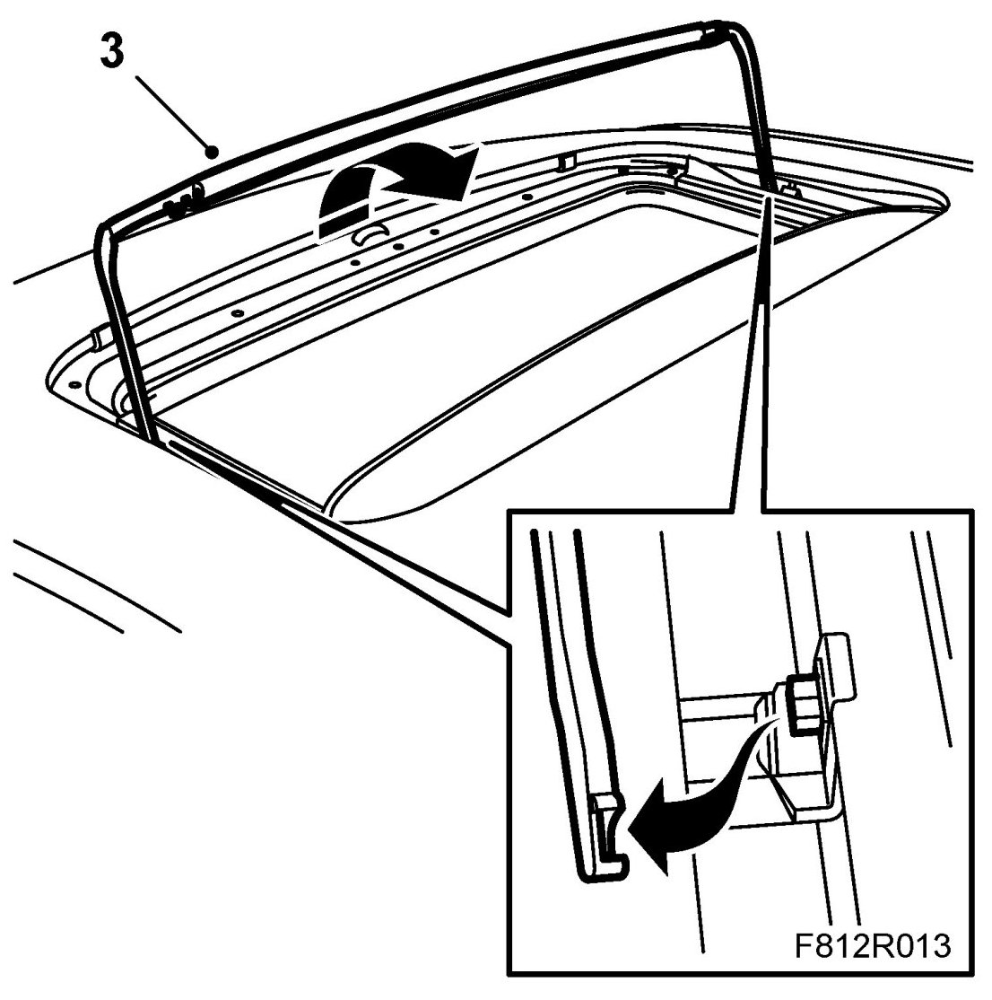
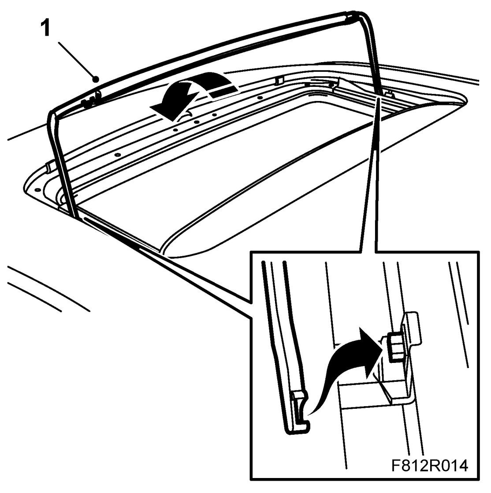
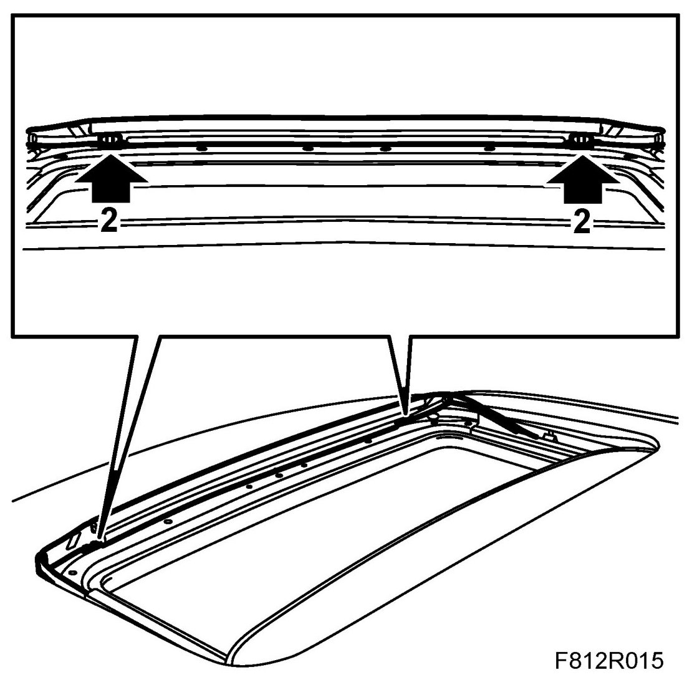

Wind Deflector
Wind Deflector
To remove
1. Open the sunroof backwards.
2. Open the clips of the lower edge of the wind deflector and remove the wind deflector from the clips.
IMPORTANT: Take care when dismantling the wind deflector from the clips. The clips are fragile.
3. Move the wind deflector upwards and backwards to loosen the wind deflector's link arms from their brackets.

To fit
1. Align the wind deflector's link arms in their brackets.

2. Move the wind deflector forwards and press the wind deflector into the clips. Make sure the clips lock.

3. Check the function.